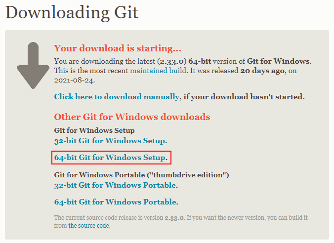
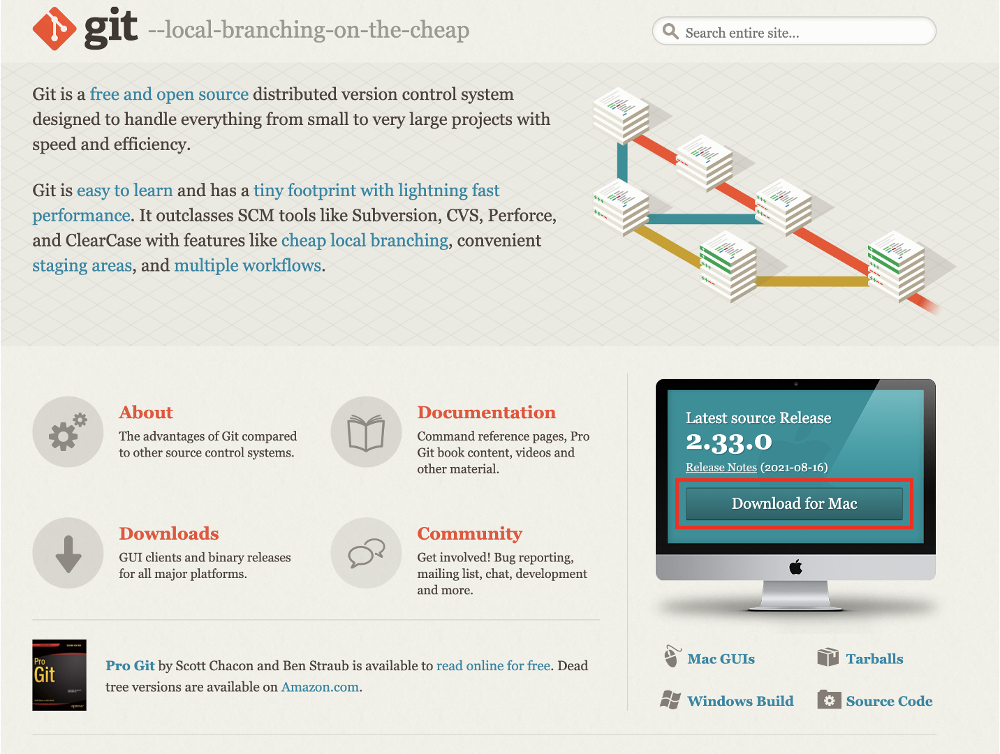
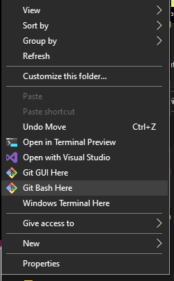
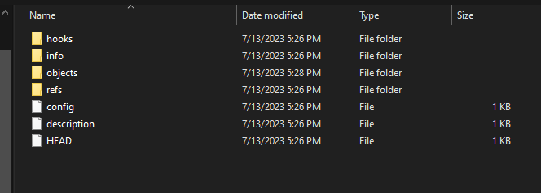
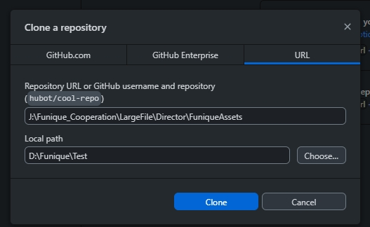
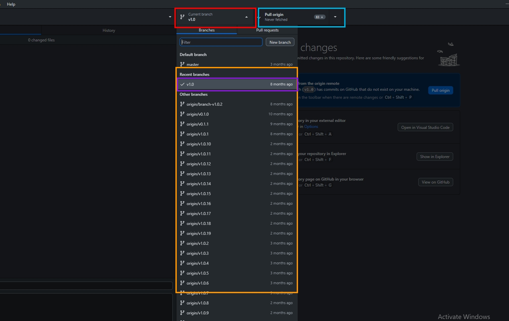
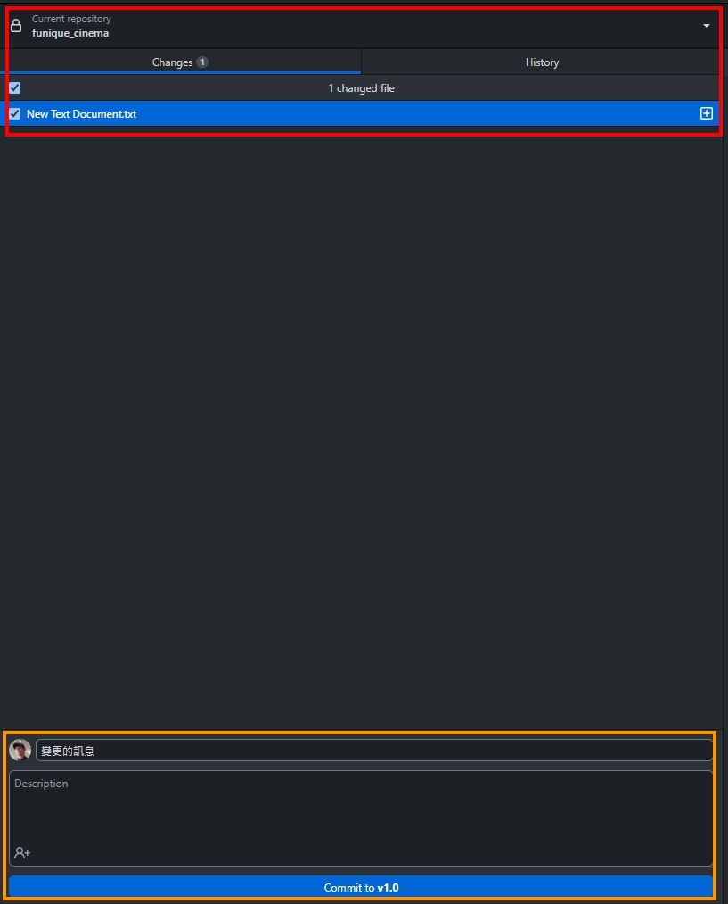

版本控制
為了能建立版本控制的美術資源, 取代舊有複雜命名規則的檔案架構. 這邊會使用 Local Git 作為方案
安裝


安裝過程就是開自動點擊外掛 點滿滿的下一頁按鈕ww
建立資源
在磁碟的 NAS 槽, 在理想要放置美術資源的地方, 資料夾右鍵

輸入指令
git init --bare --shared=group
這個指令會使資料夾生成以下的結構, 此結構就是版本控制的 git 目錄. 在這邊資料會以壓縮的方式保存, 並且保留所有版本紀錄跟分支. 這使得程式組能快速切換新的版本進行更新.

上傳檔案
開啟 Github Desktop, File -> Clone Repository

- Repository URL => 輸入 NAS 上資源的位置
- Local path => 請輸入本機電腦位置, 這個位置會作為樞紐上傳
確定後點擊 Clone 開始同步的動作, 接著會直接選擇這個 Repo (資源處)

- 紅色: 分支
- 橘色: 其他分支
- 藍色: 變更動作
- 紫色: 現在選擇的分支
Warning
必須要注意每個使用者的習慣不一樣, 使用者可能在加入 NAS 連接的方式是使用磁碟標籤, 有些使用者則是直接用 URL. 這些都會影響拉不拉的到資源. 所以在給予連結的時候一定要注意 URL 前綴.
處裡檔案上傳:

- 紅色: 變更的內容
- 橘色: 變更的留言
變更完後點擊 Publish 或 Push 即可上傳
使用情境
假如我在 Z:/Test/UI_Resource 生成了一個資寮配置處, 我就直接把這個連結給程式組. 上傳了一份我做完的 UI 到分支 v1.0 並且將分支告知程式組. 程式組會拉下資源同步, 結束.
第二次更新 UI 時. 美術組新增新的分支 v1.1, 並且檔案直接覆蓋, 確認變更, Push (上傳上去), 再通知程式組 UI 變更成 v1.1 即可.
術語
Repository
Git 的專案, 講白話就是這樣, 像是專案資料夾的存在.
Branch
分支, 像是路線
Pull
從目前的分支, 把變更的資源拉下來統整到你的本機資料夾中.
Push
把你本機資料夾的變動, 更新到分支上.
Publish
建立新的分支